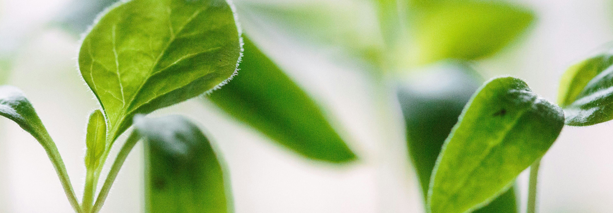
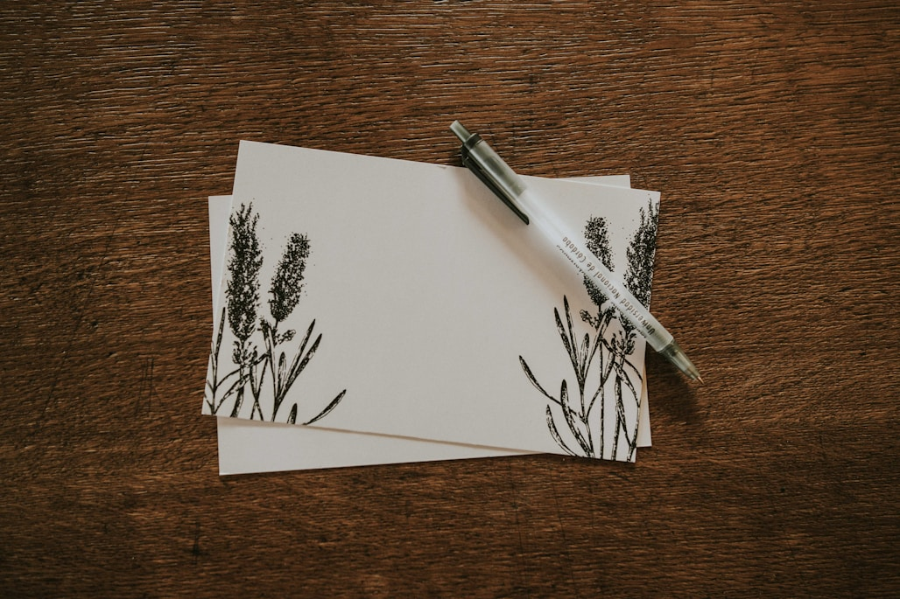
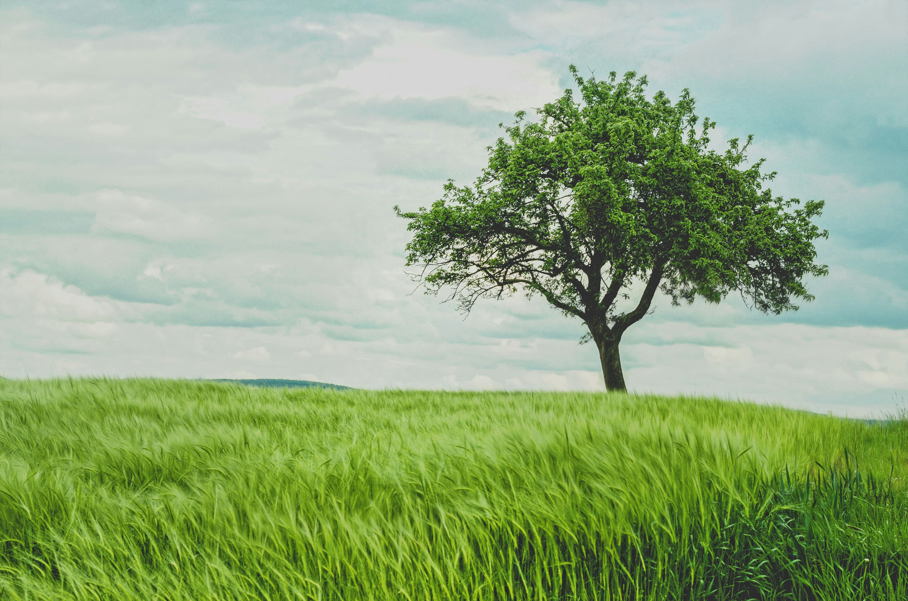
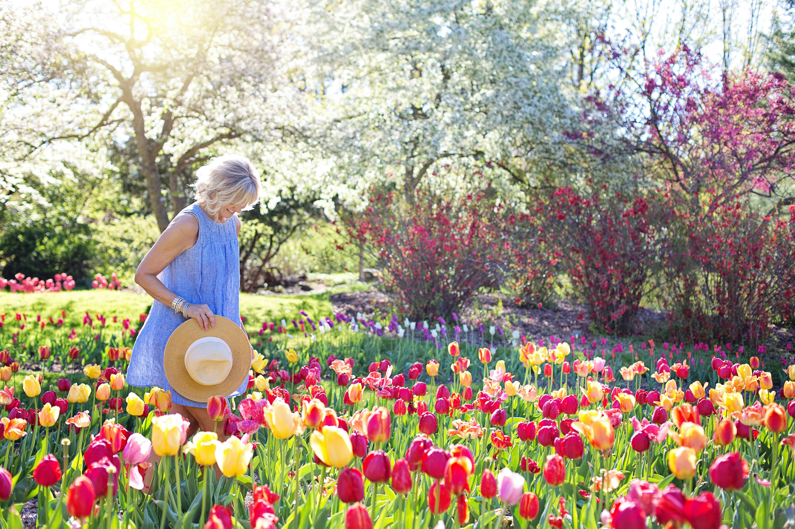
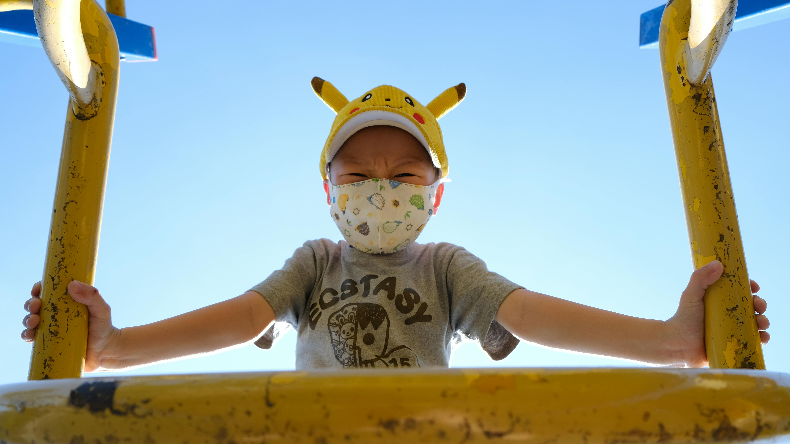
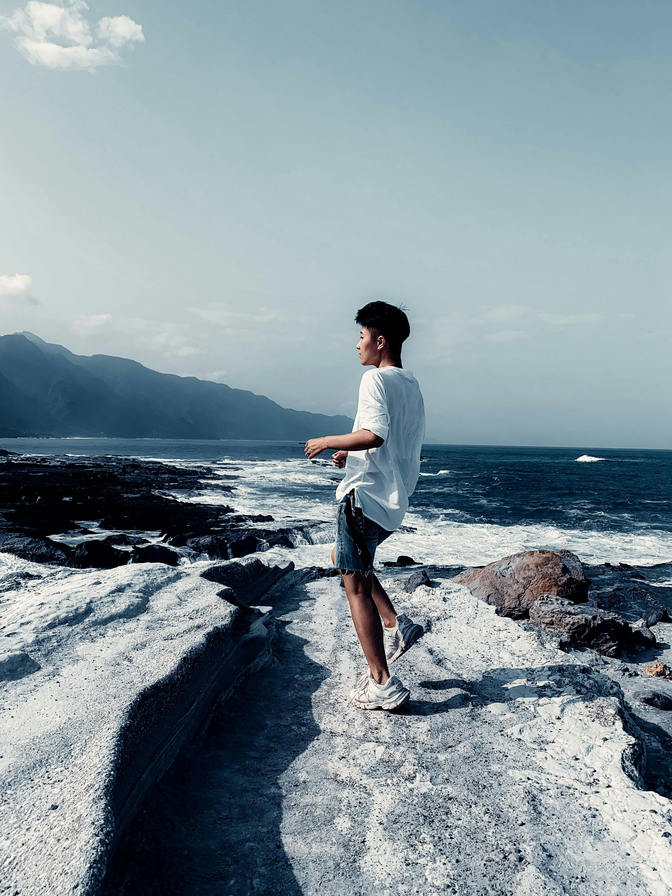

親愛的地球：
你好！我是小明，我最喜歡在公園裡跑來跑去，也喜歡去海邊玩沙子。媽媽說，我們要愛護你，不能亂丟垃圾，也不能浪費水。地球，我想告訴你，以後我會和同學一起種很多小樹，讓你變得更漂亮。希望等我長大，你還是一個很美麗的大地球！
- 你的朋友 小明

親愛的地球：
親愛的地球：謝謝你無私地滋養著我們，給予藍天、白雲、青山與綠水。你的四季輪替，讓我們感受到生命的變化與美好。
然而，我們也深知自己的行為正在傷害你。請相信我們仍在努力修補這段關係，從減少塑膠、節能減碳到植樹造林。我們希望未來的你，依然能展現純淨與和平，讓我們的後代也能擁抱你。
- -愛你的地球公民
